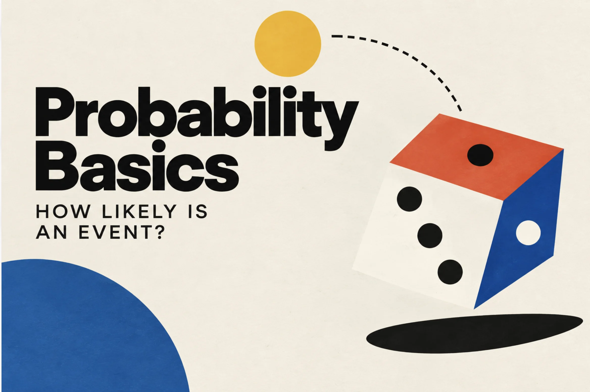
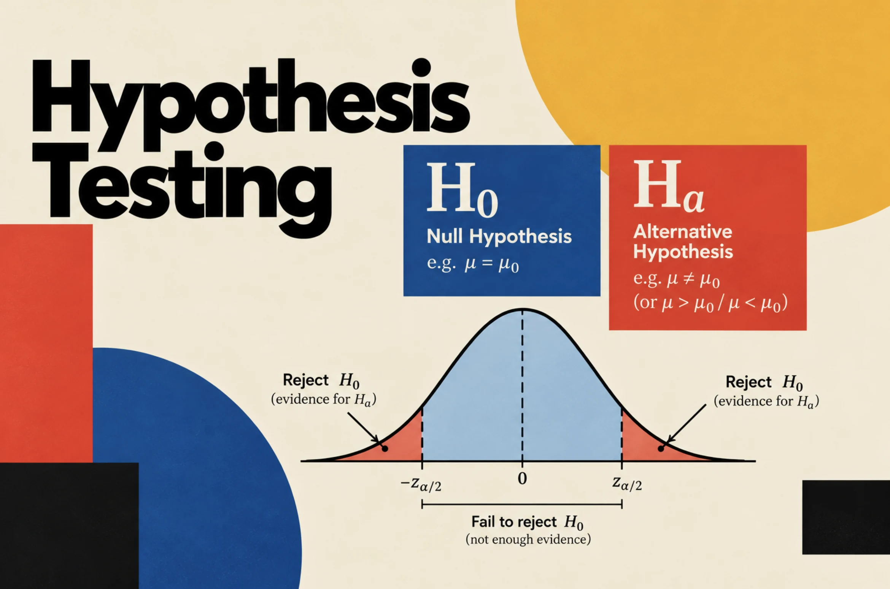
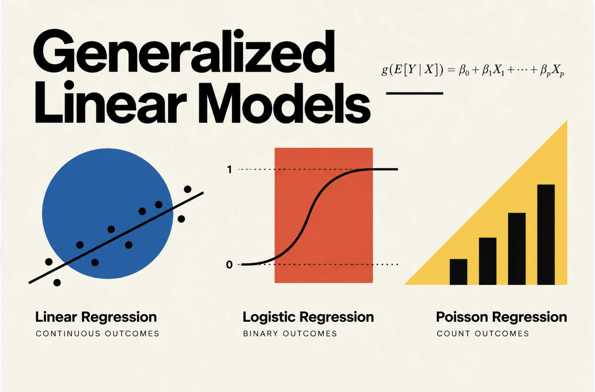
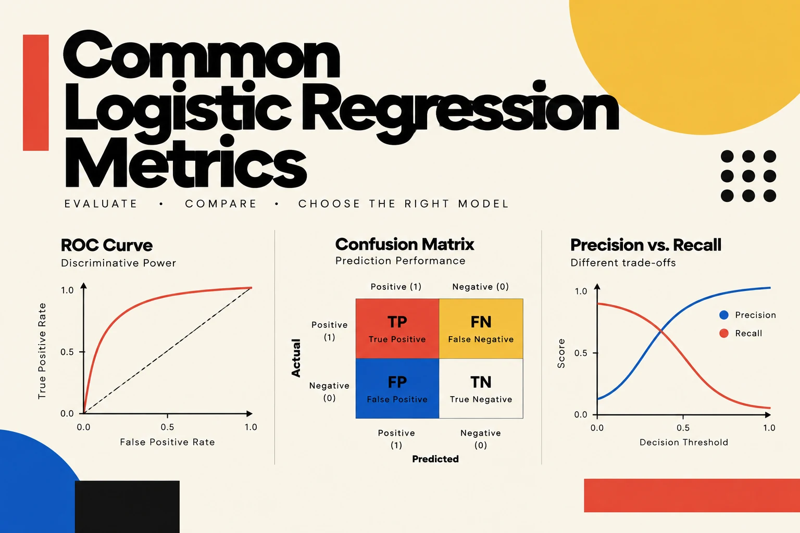

Knowledge
Nerding Out on Data.
Statistics, machine learning, and everything in between.
A collection of visual explorations into the fascinating logic behind data.
Track 1
Statistics
The foundations: describe data, reason about uncertainty, and test whether a difference is real.
§01
Data fundamentals
The basics of working with data: summarise a dataset, explore it, and structure a project from question to decision.
4 posts

§02
Probability
From single events to distributions: the language of uncertainty.
7 posts

§03
Sampling
How to choose the data you analyze, and how to avoid bias.
2 posts

§04
Inference & experiments
Test whether a change really made a difference.
7 posts

§05
Regression analysis
Model how a numeric outcome depends on other variables: fit a line, check its assumptions, and evaluate the fit.
5 posts

§06
Generalized linear models
Extend regression to outcomes that are not a plain number: yes or no, counts, rates.
2 posts

Track 2
Machine Learning
Prepare data, build models that predict and group, and check that they generalise.
§07
Model fundamentals
What every model needs: well-built features, and the right level of complexity.
4 posts

§08
Classification
Predict which category an observation belongs to: yes or no, churn or stay, spam or not.
4 posts

§09
Unsupervised learning
Find structure in data without labels: customer segments, similar products, hidden patterns.
2 posts